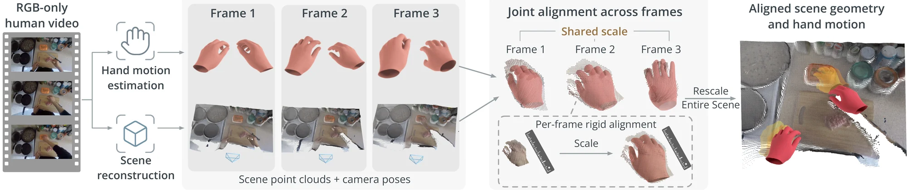
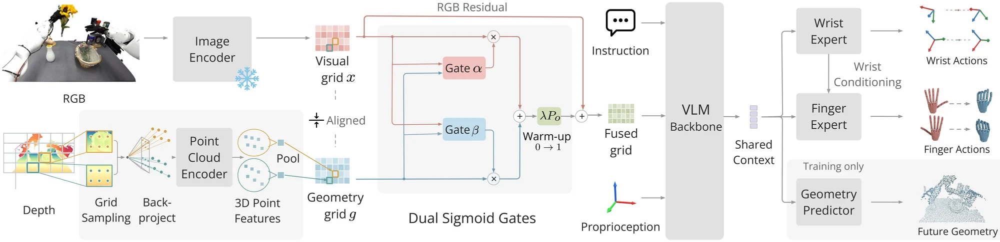
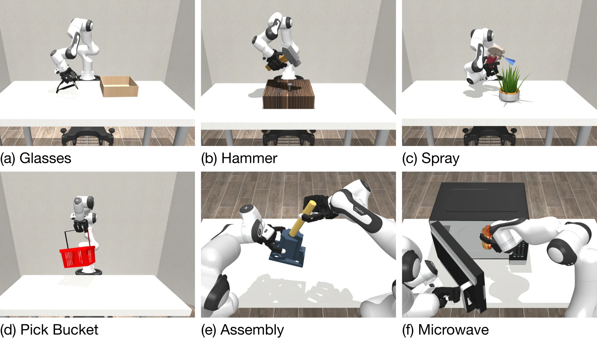
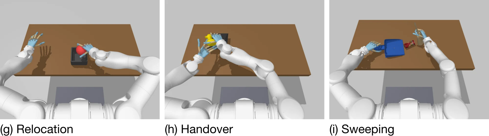

Pass Flower
Pull the flower from the vase, pass it to the other hand, and place it in the basket.
Reconstruction-Augmented Visuomotor Pre-Training of 3D-Grounded Bimanual Dexterity from RGB-Only Human Videos
We present SpatialDex, a framework that learns 3D-grounded bimanual dexterity from RGB-only human videos through reconstruction-augmented visuomotor pre-training. The central idea is to learn human behavior together with its spatial context. From each video, we reconstruct the scene geometry and estimate the hand motion, and align them at a shared video-level scale using the hand-size prior of 3D hand estimates. We retain the reconstructed geometry as both a policy input and a prediction target. The policy grounds the token grid of a pre-trained vision-language model in this geometry through gated residual fusion, is trained to predict future scene geometry alongside wrist and finger actions, and generates finger motion conditioned on the predicted trajectories of both wrists. Pre-trained on 1M human-video clips and fine-tuned with a small number of robot demonstrations, SpatialDex outperforms state-of-the-art methods by 16.5 points on nine simulated dexterous tasks across two embodiments and by 38.3 points on six real-world bimanual dexterous tasks. Under a matched comparison, pre-training with reconstructed geometry improves success by 14.2 points over pre-training on hand motion alone.
SpatialDex turns each RGB-only human video into paired supervision of scene geometry and hand motion, pre-trains a 3D-grounded visuomotor policy on that supervision, and adapts the policy to a robot with a small number of teleoperated demonstrations.


We evaluate on a bimanual platform with Wuji hands on Tianji arms. For each task we collect 50 teleoperated demonstrations and run 10 trials per method. The clips below show SpatialDex on four scene variations of each task, played at 4× speed.
Pull the flower from the vase, pass it to the other hand, and place it in the basket.
Lift the kettle and pour water into the pot.
Pick up the spray bottle and press its trigger to water the plant.
Open the zipper of a soft, deformable bag using both hands.
Hold the dustpan in one hand and sweep the trash into it with the brush in the other.
Pick up items from the table and pack them into the open suitcase.
Real-world success rates (%). Ten trials per task; the average is over all 60 trials. SpatialDex reaches 81.7%; the strongest baseline, π0.5, reaches 43.3%.
| Method | Pass Flower | Pour Water | Spray Plant | Unzip Bag | Sweep Trash | Pack Suitcase | Avg. |
|---|---|---|---|---|---|---|---|
| ACT | 40.0 | 40.0 | 10.0 | 40.0 | 40.0 | 50.0 | 36.7 |
| iDP3 | 10.0 | 10.0 | 20.0 | 10.0 | 0.0 | 30.0 | 13.3 |
| π0.5 | 40.0 | 40.0 | 50.0 | 50.0 | 20.0 | 60.0 | 43.3 |
| GeoVLA | 20.0 | 20.0 | 40.0 | 20.0 | 30.0 | 40.0 | 28.3 |
| Any3D-VLA | 30.0 | 40.0 | 20.0 | 20.0 | 30.0 | 40.0 | 30.0 |
| VITRA | 30.0 | 20.0 | 50.0 | 40.0 | 30.0 | 50.0 | 36.7 |
| UniDex | 30.0 | 40.0 | 20.0 | 40.0 | 10.0 | 50.0 | 31.7 |
| SpatialDex (Ours) | 80.0 | 80.0 | 90.0 | 80.0 | 70.0 | 90.0 | 81.7 |
Full rollouts of SpatialDex, the strongest baseline π0.5, and the human-video pre-trained VITRA on three of the six tasks, with comparable table setups and played at 4× speed. The percentage next to each method is its success rate over ten trials on that task; the baseline clips show typical failures.
Pulls the flower from the vase, passes it to the other hand, and places it in the basket.
Pulls the flower from the vase, but the other hand never takes it.
Starts pulling the flower, then lets go and leaves it leaning out of the vase.
Lifts the kettle and pours water into the pot.
Lifts the kettle but never brings it over the pot to pour.
Closes its hand beside the kettle handle and never lifts the kettle.
Holds the dustpan in one hand and sweeps the trash into it with the brush in the other.
Holds the dustpan, but the other hand pushes the brush over instead of grasping it.
Tips the dustpan and knocks the brush onto its side without grasping it.
We evaluate nine simulated tasks on two embodiments. SpatialDex reaches 76.3% mean success, compared with 59.8% for the strongest baseline, π0.5, with the largest gains on tasks that require bimanual coordination.


Simulation success rates (%). Means over three seeds with 50 episodes per seed. Averages are unweighted over unimanual Allegro, bimanual Allegro, bimanual Wuji, and all nine tasks. Best per column in bold.
| Allegro + Franka | Wuji + Tianji | Average | |||||||||||
|---|---|---|---|---|---|---|---|---|---|---|---|---|---|
| Method | Fold Glasses | Hammer Nail | Water Plant | Pick Bucket | Bimanual Assembly | Bimanual Microwave | Relocate Ball | Pass Toy | Sweep Trash | Uni. Allegro | Bi. Allegro | Bi. Wuji | All |
| ACT | 47.3 | 50.0 | 47.3 | 64.0 | 0.0 | 66.0 | 36.7 | 34.0 | 24.7 | 52.2 | 33.0 | 31.8 | 41.1 |
| iDP3 | 10.0 | 18.0 | 48.7 | 54.0 | 0.0 | 38.0 | 20.0 | 14.7 | 10.7 | 32.7 | 19.0 | 15.1 | 23.8 |
| π0.5 | 72.0 | 84.7 | 88.7 | 84.0 | 5.3 | 70.0 | 64.7 | 36.0 | 32.7 | 82.4 | 37.7 | 44.5 | 59.8 |
| GR00T N1.5 | 27.3 | 67.3 | 72.7 | 72.0 | 0.7 | 50.7 | 38.0 | 28.7 | 24.0 | 59.8 | 25.7 | 30.2 | 42.4 |
| ManiFlow | 12.7 | 20.0 | 37.3 | 56.7 | 0.0 | 55.3 | 30.7 | 24.0 | 19.3 | 31.7 | 27.7 | 24.7 | 28.4 |
| SpatialVLA | 8.7 | 14.0 | 24.7 | 26.0 | 0.0 | 18.7 | 18.7 | 11.3 | 8.0 | 18.4 | 9.4 | 12.7 | 14.5 |
| GeoVLA | 12.0 | 18.7 | 26.7 | 28.0 | 0.7 | 22.0 | 24.7 | 15.3 | 12.0 | 21.4 | 11.4 | 17.3 | 17.8 |
| Any3D-VLA | 2.7 | 25.3 | 46.7 | 30.0 | 0.0 | 43.3 | 36.0 | 26.7 | 20.7 | 26.2 | 21.7 | 27.8 | 25.7 |
| VITRA | 17.3 | 46.7 | 60.0 | 53.3 | 0.0 | 36.7 | 52.0 | 34.7 | 28.0 | 44.3 | 18.4 | 38.2 | 36.5 |
| Being-H0.5 | 26.7 | 45.3 | 50.0 | 76.7 | 0.0 | 49.3 | 34.7 | 25.3 | 20.0 | 49.7 | 24.7 | 26.7 | 36.4 |
| UniDex | 10.7 | 16.0 | 28.0 | 27.3 | 1.3 | 20.7 | 22.0 | 16.7 | 10.7 | 20.5 | 11.0 | 16.5 | 17.0 |
| SpatialDex (Ours) | 77.3 | 94.0 | 91.3 | 79.3 | 16.7 | 84.0 | 88.7 | 75.3 | 80.0 | 85.5 | 50.4 | 81.3 | 76.3 |
Under a matched comparison on the same videos, demonstrations, and budget, motion-only pre-training raises mean success from 45.6% to 58.9%, and adding reconstructed geometry raises it further to 73.1%. Removing any component of the geometry pathway or the coordinated action experts lowers success.
Pre-training and component ablations. Success rates (%). Means over three seeds with 50 episodes per task and seed.
| Allegro + Franka | Wuji + Tianji | ||||||
|---|---|---|---|---|---|---|---|
| Variant | Hammer Nail | Bimanual Assembly | Bimanual Microwave | Relocate Ball | Pass Toy | Sweep Trash | Avg. |
| SpatialDex (Ours) | 94.0 | 16.7 | 84.0 | 88.7 | 75.3 | 80.0 | 73.1 |
| No human pre-training | 62.7 | 4.0 | 52.0 | 64.0 | 44.7 | 46.0 | 45.6 |
| Motion-only pre-training | 80.0 | 8.7 | 66.7 | 77.3 | 58.0 | 62.7 | 58.9 |
| Per-frame alignment | 90.7 | 8.0 | 68.0 | 87.0 | 55.3 | 74.0 | 63.8 |
| RGB-only input | 50.0 | 2.3 | 41.3 | 55.3 | 40.0 | 32.0 | 36.8 |
| 2D depth encoding | 72.0 | 6.7 | 60.0 | 74.0 | 50.7 | 56.7 | 53.3 |
| Concat RGB + geometry | 82.0 | 6.0 | 69.3 | 73.3 | 60.7 | 62.7 | 59.0 |
| No fusion warm-up | 87.3 | 15.0 | 83.0 | 88.7 | 67.0 | 68.0 | 68.2 |
| No forward dynamics loss | 87.3 | 12.0 | 76.0 | 82.7 | 65.3 | 67.3 | 65.1 |
| Joint wrist-finger expert | 90.0 | 12.7 | 78.7 | 85.3 | 66.7 | 73.3 | 67.8 |
| No wrist-trajectory input | 92.0 | 13.3 | 80.7 | 86.0 | 68.0 | 76.0 | 69.3 |